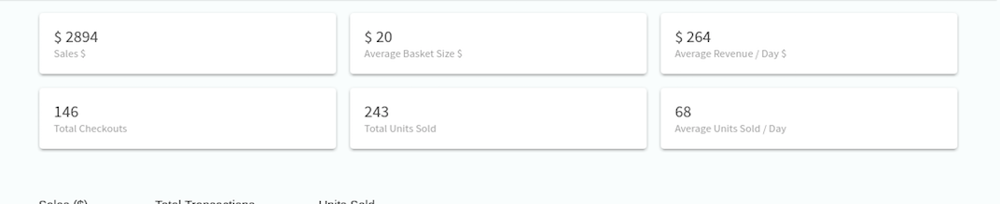

ALES PERFORMANCE¶
The Sales Performance screen of the platform offers insights and depicts the trend that can be discovered from POS data. The global filters allow you to draw sales insights for products across all levels of hierarchy. The default time range for which insights are presented on first load is the current week. This can be changed with the help of the time filter in the top right portion of the screen.
Overview Cards¶
The following metrics are depicted as cards:
- Sales ($) - Total revenue generated in for the time range provided. The unit used is for depiction is American Dollar($).
- Average Basket Size ($) - Average value in ($) of each basket during checkout for the selected time period.
- Average Revenue / Day $ - Average Revenue in ($) generated per day from sales for the selected time period.
- Total Checkouts - Total number of transaction headers generated for the selected time period.
- Total Units Sold - Total number of units sold for the selected time period.
- Average Number of Units Sold / Day - Average number of units sold per day for the selected time period.
Graphs¶
Delivers a graphical illustration of important parameters like revenue generated by sales, total transactions and number of units sold for the specified products at a specified interval of time.
Line Graph¶
- The horizontal axis contains time period and the vertical axis represents unit of measurement ($ or number of items).
- The icons next to the “zoom” text help in increasing or decreasing granularity of the graph.
Pie Chart¶
- This depicts the share of revenue among the specified products for the time period specified in the filter above.
- The revenue share is depicted for the given products across all stores relevant to the end user.
STACKED BAR GRAPH¶
- This depicts the progression of revenue among the specified products for the time period specified in the filter above.
- The revenue progression is depicted for the given products across all stores relevant to the end user.